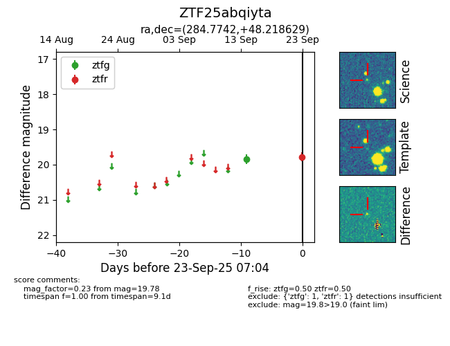

FINK: ZTF25abqiyta
Lasair: ZTF25abqiyta
ALeRCE: ZTF25abqiyta
ZTF25abqiyta (ztf,fink)
equatorial (ra, dec) = (284.7742,+48.21863)
galactic (l, b) = (78.2694,+18.67565)

last ztfg=19.85, ztfr=19.78
1 ztfg, 1 ztfr detections